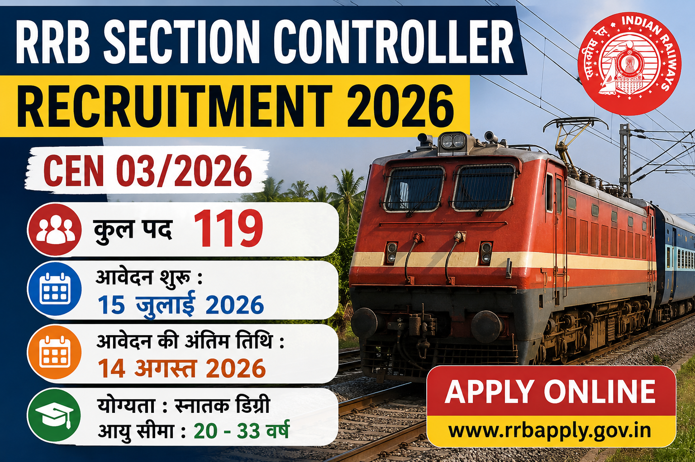

Railway Recruitment Boards (RRBs) ने Centralised Employment Notification (CEN 03/2026) जारी करते हुए Section Controller के पदों पर भर्ती के लिए ऑनलाइन आवेदन शुरू कर दिए हैं। इच्छुक उम्मीदवार 15 जुलाई 2026 से 14 अगस्त 2026 तक आवेदन कर सकते हैं।
भारतीय रेलवे में सरकारी नौकरी की तैयारी कर रहे उम्मीदवारों के लिए शानदार अवसर आया है। Railway Recruitment Board (RRB) ने Section Controller के पदों पर भर्ती के लिए Centralised Employment Notification (CEN 03/2026) जारी कर दिया है।
इस भर्ती अभियान के तहत देशभर के विभिन्न Railway Zones में कुल 119 पदों पर भर्ती की जाएगी। आवेदन प्रक्रिया पूरी तरह ऑनलाइन होगी और योग्य उम्मीदवार अंतिम तिथि से पहले आवेदन कर सकते हैं।
| Particular | Details |
|---|---|
| Recruitment Board | Railway Recruitment Board (RRB) |
| Notification Number | CEN 03/2026 |
| Post Name | Section Controller |
| Total Vacancy | 119 Posts |
| Job Location | All India |
| Application Mode | Online |
| Salary | Level-6 (₹35,400 Initial Pay) |
| Official Website | www.rrbapply.gov.in |
| Event | Date |
|---|---|
| Notification Released | 27 June 2026 |
| Apply Online Start | 15 July 2026 |
| Last Date to Apply | 14 August 2026 |
| Last Date Fee Payment | 16 August 2026 |
| Application Correction | 17 August to 26 August 2026 |
| Post Name | Total Posts |
|---|---|
| Section Controller | 119 |
उम्मीदवार के पास किसी मान्यता प्राप्त विश्वविद्यालय से किसी भी विषय में Graduation Degree होना अनिवार्य है।
जो उम्मीदवार अंतिम वर्ष का परिणाम आने का इंतजार कर रहे हैं, वे इस भर्ती के लिए आवेदन करने के पात्र नहीं होंगे।
| Criteria | Age |
|---|---|
| Minimum Age | 20 Years |
| Maximum Age | 33 Years |
| Age Calculation Date | 01 July 2026 |
| Age Relaxation | As Per Government Rules |
चयनित उम्मीदवारों को 7th CPC के अनुसार Pay Level-6 के तहत ₹35,400 प्रारंभिक वेतन के साथ अन्य सरकारी भत्तों का लाभ भी मिलेगा।
RRB Section Controller Recruitment 2026 में उम्मीदवारों का चयन विभिन्न चरणों के माध्यम से किया जाएगा। प्रत्येक चरण में सफल होने वाले उम्मीदवारों को अगले चरण के लिए बुलाया जाएगा।
उम्मीदवारों को Railway Recruitment Board द्वारा निर्धारित मेडिकल फिटनेस मानकों को पूरा करना होगा। अंतिम चयन से पहले मेडिकल परीक्षण कराया जाएगा।
| Category | Application Fee |
|---|---|
| General / OBC / EWS | ₹500 |
| SC / ST / PwBD / Female / Ex-Serviceman / Minority / EBC | ₹250 |
आवेदन शुल्क का भुगतान केवल ऑनलाइन माध्यम (Debit Card, Credit Card, Net Banking अथवा UPI) से किया जा सकेगा।
| Subject | Questions |
|---|---|
| General Awareness | 40 |
| Mathematics | 30 |
| General Intelligence & Reasoning | 30 |
| Total | 100 |
CBT परीक्षा वस्तुनिष्ठ (Objective Type) होगी। परीक्षा में Negative Marking लागू रहेगी। प्रत्येक गलत उत्तर पर निर्धारित नियमों के अनुसार अंक काटे जाएंगे।
RRB Section Controller Recruitment 2026 के लिए ऑनलाइन आवेदन करने हेतु नीचे दिए गए बटन पर क्लिक करें।
Railway Recruitment Board द्वारा Section Controller Recruitment 2026 के लिए ऑनलाइन आवेदन प्रक्रिया शुरू हो चुकी है। योग्य उम्मीदवार निर्धारित अंतिम तिथि तक आवेदन कर सकते हैं। आवेदन करने से पहले आधिकारिक अधिसूचना को ध्यानपूर्वक पढ़ना आवश्यक है।
यदि आप Railway में Section Controller बनना चाहते हैं, तो अंतिम तिथि का इंतजार न करें। सभी आवश्यक दस्तावेज़ तैयार रखें और समय रहते आवेदन पूरा करें।
Railway Recruitment Board (RRB) ने CEN 03/2026 के तहत Section Controller भर्ती का नोटिफिकेशन जारी कर दिया है।
इस भर्ती अभियान के तहत Section Controller के कुल 119 पदों पर भर्ती की जाएगी।
ऑनलाइन आवेदन प्रक्रिया 15 जुलाई 2026 से शुरू हो चुकी है।
उम्मीदवार 14 अगस्त 2026 तक ऑनलाइन आवेदन कर सकते हैं।
उम्मीदवार के पास किसी मान्यता प्राप्त विश्वविद्यालय से Graduation Degree होना आवश्यक है।
उम्मीदवार की आयु 01 जुलाई 2026 को 20 से 33 वर्ष के बीच होनी चाहिए। आरक्षित वर्ग को नियमानुसार आयु में छूट मिलेगी।
चयन Computer Based Test (CBT), Document Verification एवं Medical Examination के आधार पर किया जाएगा।
चयनित उम्मीदवारों को Pay Level-6 के अंतर्गत ₹35,400 प्रारंभिक वेतन मिलेगा।
उम्मीदवार Railway Recruitment Board के आधिकारिक Apply Portal पर जाकर ऑनलाइन आवेदन कर सकते हैं।
RRB Section Controller Recruitment 2026 से संबंधित सभी महत्वपूर्ण अपडेट Education Update Hub तथा Railway Recruitment Board की आधिकारिक वेबसाइट पर उपलब्ध कराए जाएंगे।